Viva Script — Shared Overview (All Members Must Study This)
Read this first. This section covers what every team member must know. Then read your own individual script for your assigned deep-dive topics.
🎯 One-Sentence Summary (Memorise This)
"We trained a graph convolutional network to learn a task-specific molecular fingerprint from atom-level graphs, and showed it beats the traditional fixed ECFP fingerprint + random forest on both ESOL solubility regression and Tox21 multi-label toxicity classification, using honest scaffold splits and three seeded runs."
📌 Project Name & Motivation
MolFP-GCN — Learned Molecular Fingerprints with Graph Convolutional Networks.
Why this project? - A molecule needs to be turned into numbers before any ML model can use it. - The old way (ECFP / Morgan fingerprint): a fixed hash function looks at each atom's 2-bond neighbourhood and writes bits. The same molecule always gets the same 2048 bits, regardless of whether you want to predict solubility or toxicity. - Our way (GCN): treat the molecule as a graph (atoms = nodes, bonds = edges). A learned neural network aggregates neighbour information in rounds. The resulting 256-number vector is a learned fingerprint shaped by the training task. - Central question: Does the learned fingerprint actually beat ECFP + random forest when both get the same data and the same honest split?
📊 Datasets (Know These Cold)
| Dataset | Task Type | Size | Target | Missing Labels |
|---|---|---|---|---|
| ESOL (Delaney 2004) | Regression | 1,128 molecules | logS (water solubility) | None |
| Tox21 (MoleculeNet) | Multi-label classification | 7,823 molecules | 12 binary toxicity assays | 17% missing |
- logS is a log scale: −1 means 10× more soluble than −2, etc. Higher = dissolves better.
- Tox21 has 12 assay tasks (NR-AR, NR-AR-LBD, NR-AhR, NR-Aromatase, NR-ER, NR-ER-LBD, NR-PPAR-gamma, SR-ARE, SR-ATAD5, SR-HSE, SR-MMP, SR-p53). Only 7.5% of known labels are positive ("toxic").
- Source: DeepChem mirror. SHA-256 checksums verified on download.
- RDKit couldn't sanitise 8 Tox21 SMILES → dropped. ESOL lost none.
🏆 Results (The Numbers Everyone Must Know)
| Model | ESOL RMSE ↓ | ESOL R² ↑ | Tox21 ROC-AUC ↑ |
|---|---|---|---|
| GCN (learned FP) | 1.063 ± 0.163 | 0.709 ± 0.048 | 0.811 ± 0.009 |
| ECFP4 + Random Forest | 1.694 ± 0.498 | 0.267 ± 0.248 | 0.756 ± 0.015 |
Key takeaways: 1. GCN wins on both tasks. 2. On Tox21, the GCN is ahead on 11 of 12 assays (RF ahead only on SR-ARE). 3. All numbers are mean ± std over seeds 0, 1, 2 (scaffold split + model initialisation).
Caveats to mention proactively: - The RF's ESOL average is dragged down by seed 1 (RMSE 2.25) where polychlorinated biphenyls all landed in the test set. On the other two seeds the gap is smaller. - The Tox21 ROC-AUC 0.811 is slightly above our expected band (0.68–0.80). Our scaffold split is likely easier than DeepChem's deterministic one, so don't compare directly with papers.
🔑 What is a Scaffold Split? (Will Be Asked)
- A scaffold is the core ring structure of a molecule (Bemis–Murcko framework).
- We group molecules by scaffold and keep each entire group in one split (train / val / test).
- Why? Because chemistry datasets contain families of near-copies. If one family member is in training and its twin is in test, the test is too easy — the model has effectively "seen" the answer.
- Ablation proof: Random split gave GCN RMSE 0.80 ± 0.02 vs scaffold split 1.06 ± 0.16. That improvement on random split is leakage, not real performance.
📐 Metrics Explained (So You Don't Freeze When Asked)
| Metric | What It Means | Good Value |
|---|---|---|
| RMSE | Typical size of error in logS units. Lower = better. | < 1.5 |
| MAE | Average absolute error. Lower = better. | < 1.0 |
| R² | Fraction of variance explained. 1 = perfect, 0 = just guessing the mean. | > 0.5 |
| ROC-AUC | If you pick one toxic and one non-toxic molecule at random, how often does the model rank correctly? 0.5 = coin flip, 1.0 = perfect. | > 0.75 |
🏗️ How To Run Everything (Demo Commands)
make all # setup + download + train 3 seeds × 2 models × 2 datasets + evaluate + figures + tests
make demo # launch Streamlit at http://localhost:8501
make ablations # depth / readout / split ablation experiments
make test # run 34 pytest tests
make lint # ruff check + format
One single training run:
python -m molfp.train --config configs/esol_gcn.yaml --seed 0
📁 Project Layout (Point to folders confidently)
molfp/ → all ML code: featurize, model, train, evaluate, explain, figures
configs/ → YAML configs for each experiment
scripts/ → download_data.py
app/ → Streamlit demo (streamlit_app.py + style.css)
data/ → raw CSVs + scaffold splits
results/ → esol.json, tox21.json, ablations.json
reports/ → REPORT.md + figures/
tests/ → 34 pytest tests
docs/ → EXPLAIN.md, PROJECT_IN_SIMPLE_WORDS.md, ARCHITECTURE.md, DESIGN.md
🛡️ Key Integrity Guarantees (Mention These Proactively — They Impress)
- No leakage: scaffold split tested with zero-overlap assertion on canonical SMILES.
- Test set used once: a test scrambles test data and retrains — weights come out bit-identical, proving test set is never used during training.
- Both models see the same split: split file is the single source of truth; evaluate asserts matching hashes between GCN and RF.
- Normalisation stats from train only: changing val/test targets doesn't change them.
- Every number auto-generated:
python -m molfp.figuresfills in all report numbers fromresults/*.json. Nothing is typed by hand.
Now read your individual script below.
Viva Script — Kumaraswamy (S20230010101)
Your Focus Areas
- GCN Model Architecture & Theory (the core ML)
- Featurisation Pipeline (SMILES → graph)
- Saliency / Explainability
Read 00_OVERVIEW.md first for the project-level context everyone shares.
PART 1: THE GCN MODEL — WHAT IT IS AND HOW IT WORKS
1.1 What Is a Graph Convolutional Network?
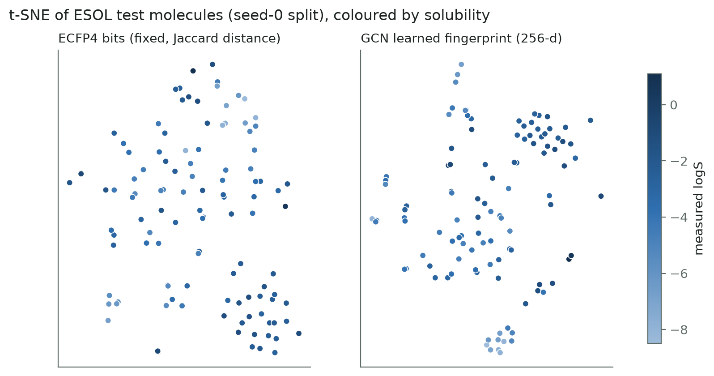
Opening line for the viva:
"A GCN is a neural network that operates on graph-structured data. In our case, each molecule is a graph — atoms are nodes, bonds are edges — and the GCN learns to combine atom information through message passing to produce a molecule-level representation."
How it works in simple steps: 1. Each atom starts with a 35-dimensional feature vector (element type, degree, charge, hydrogen count, hybridisation, aromaticity, ring membership, mass). 2. A linear layer projects those 35 numbers into 128 dimensions. 3. Then 3 GCNConv layers run. In each layer, every atom takes a degree-normalised average of its own features and its bonded neighbours' features, then applies a shared linear transformation. 4. After all layers, mean pooling (average across all atoms) and max pooling (max across all atoms) are concatenated → a 256-dimensional learned fingerprint. 5. A 2-layer MLP maps this fingerprint to the final prediction: 1 number (logS for ESOL) or 12 logits (Tox21 toxicity).
Diagram to draw on the board:
Atom features [n_atoms × 35]
│
Linear(35 → 128)
│
GCNConv + BN + ReLU + Dropout ← Layer 1
│
GCNConv + BN + ReLU + Dropout ← Layer 2 (+residual)
│
GCNConv + BN + ReLU + Dropout ← Layer 3 (+residual)
│
mean ‖ max pooling → [256] ← THE LEARNED FINGERPRINT
│
MLP(256 → 128 → output) ← Property head
1.2 The GCNConv Equation — Be Ready to Write This
Break it down piece by piece:
| Symbol | What It Is | Why It's There |
|---|---|---|
| H | Atom feature matrix [n_atoms × features] | Current state of all atoms |
| A | Adjacency matrix (1 if two atoms bonded) | Defines the graph structure |
| +I | Self-loop (identity matrix added) | Without it, an atom's update would lose its own identity — it would only contain neighbour info |
| D | Degree matrix (diagonal: how many bonds each atom has) | — |
| D^{−½} … D^{−½} | Symmetric normalisation | Without this, a carbon with 4 neighbours sums 4 messages while a terminal oxygen sums 1. The symmetric form divides by √(deg_i · deg_j), keeping values stable |
| W | Learnable weight matrix, shared across ALL atoms | Like a CNN kernel shared across pixels — this is what makes it work for molecules of any size |
Analogy to use:
"It's like people in a room. Each person asks their neighbours what they know, averages it with their own knowledge, and updates their opinion. After 3 rounds, everyone knows about people up to 3 handshakes away."
1.3 Why 3 Layers? Connection to ECFP Radius
- After L layers, each atom's vector contains information from atoms up to L bonds away.
- ECFP4 has radius 2, so it sees atoms 2 bonds away.
- 3 GCN layers see one bond further — same neighbourhood range.
- Too many layers → over-smoothing: every atom's vector converges to the molecule-wide average, and max pooling has nothing to pick out.
Ablation result (be ready to quote): - Depth 1: RMSE 1.082 ± 0.204 - Depth 2: RMSE 1.002 ± 0.135 - Depth 3: RMSE 1.063 ± 0.163 (our default) - Depth 4: RMSE 1.053 ± 0.156 - All within noise — we didn't see over-smoothing at 4 layers, probably because of residual connections (skip connections from layer 2 onwards).
1.4 Residual Connections — Why and Where
In our code (model.py line 56):
h = h + out if i >= 1 else out # residual from layer 2 on
- Layer 1 changes the representation the most (from 35-dim atom features to abstract embeddings).
- Layers 2 and 3 refine it. The skip connection lets gradients flow directly to earlier layers, preventing vanishing gradients and reducing over-smoothing.
1.5 Why Mean + Max Pooling? Permutation Invariance
Key concept: A molecule's atoms have no natural order. The SMILES c1ccccc1 and
c1ccc(cc1) describe the same benzene differently. If our readout depended on atom order,
the same molecule would get two different predictions.
Mean pooling captures: "What is this molecule made of on average?" Max pooling captures: "Is there at least one atom/group like X?" (e.g., one nitro group can dominate toxicity but would get diluted by mean).
Test: we renumber atoms randomly and check the output differs by < 1e-5.
Ablation result: - Mean only: 0.985 ± 0.172 - Max only: 1.046 ± 0.072 - Mean+Max: 1.063 ± 0.163 - No clear winner — we kept mean+max as it was the planned default.
PART 2: THE FEATURISATION PIPELINE
2.1 From SMILES to Graph
Pipeline (be ready to trace through):
"CC(=O)Oc1ccccc1C(=O)O" (aspirin)
│
RDKit parses it
│
featurize.parse_smiles() → (Mol object, None) or (None, "reason")
│
featurize.mol_to_data() → PyG Data object:
• x: [n_atoms × 35] float tensor — atom feature vectors
• edge_index: [2 × 2·n_bonds] long tensor — directed edges
• edge_attr: [2·n_bonds × 6] float tensor — bond features (STORED but NOT USED by GCNConv)
• y: target label(s)
• smiles: original string
• num_atoms: count
2.2 Atom Features — 35 Numbers (KNOW THIS TABLE)
| Feature Block | Values | Width | Columns |
|---|---|---|---|
| Element | C, N, O, S, F, Cl, Br, I, P, other | 10 | 0–9 |
| Degree | 0, 1, 2, 3, 4, 5, other | 7 | 10–16 |
| Formal charge | −1, 0, +1, other | 4 | 17–20 |
| Total H count | 0, 1, 2, 3, 4 | 5 | 21–25 |
| Hybridisation | SP, SP2, SP3, SP3D, SP3D2, other | 6 | 26–31 |
| Is aromatic | 0/1 | 1 | 32 |
| Is in ring | 0/1 | 1 | 33 |
| Mass / 100 | float (C = 0.12) | 1 | 34 |
Why "other" slots? If a rare element appears that's not in our list, it falls into the "other" bin instead of crashing. Same for unusual degrees or charges.
Why mass/100? Raw mass (e.g. 12.0, 16.0) would dominate the other features which are 0/1. Dividing by 100 keeps it in a similar range.
2.3 Bond Features — 6 Numbers (Stored But Not Used)
| Feature | Values |
|---|---|
| Bond type | single, double, triple, aromatic (one-hot, 4 dims) |
| Is conjugated | 0/1 |
| Is in ring | 0/1 |
Critical talking point: GCNConv ignores these! A C=O and a C–O send identical messages.
The features are stored in edge_attr so a future edge-aware layer (GINE, GATv2, D-MPNN)
could use them without changing the featuriser — only model.py would change.
2.4 Graph Rules
- Every bond i–j becomes two directed edges: i→j and j→i. This is because PyG's GCNConv expects directed edges.
- Hydrogens are implicit: counted as a feature on the heavy atom, never added as nodes. This keeps the graph smaller without losing information.
2.5 Error Handling — parse_smiles Never Crashes
def parse_smiles(smiles):
"""Return (mol, None) or (None, reason). Never raises."""
- Empty/non-string input →
(None, "empty input") - Syntax error →
(None, "syntax error (check brackets and ring-closure digits)") - Invalid chemistry →
(None, "invalid chemistry: {e}") - No atoms →
(None, "no atoms")
This is invariant 3. The demo shows a friendly error message; the data loader drops and logs the count.
PART 3: SALIENCY / EXPLAINABILITY
3.1 What Is Saliency?
For a prediction o and atom feature matrix X [atoms × 35]:
Score for atom i = Σ_f X[i,f] × ∂o/∂X[i,f]
This is a gradient × input attribution. It's a first-order (Taylor) estimate of how much atom i's features contribute to the output.
In code (explain.py):
out[0, target].backward()
s = (x.grad * x).sum(dim=1) # one score per atom
# then scale to [-1, 1] by dividing by max |score|
3.2 How to Read the Colours
| Colour | Meaning |
|---|---|
| Red | This atom's features push the prediction UP (more soluble / more toxic) |
| Blue | This atom's features push the prediction DOWN (less soluble / less toxic) |
| White | Didn't matter much |
3.3 Chemical Sense Check — Examples to Mention
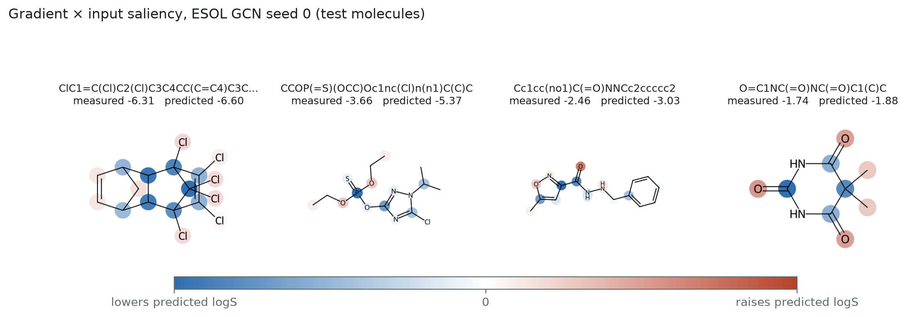
- ESOL: Carbonyl (C=O) and hydroxyl (O-H) oxygens → red (they like water, increase solubility). Aromatic carbon rings and chlorinated carbons → blue (hydrophobic, decrease solubility). This makes chemical sense!
3.4 Limitations of Saliency (IMPORTANT — Will Be Asked)
- Gradients are local: they describe a tiny change to features, not what happens if you remove the atom entirely.
- ReLU saturation: an important atom can show a small gradient if the ReLU is in its flat region.
- Message passing spreads credit: a carbon may light up because of the oxygen bonded to it — they've been mixing information for 3 rounds.
- It explains the model, not the chemistry: the model may have learned a shortcut or correlation, not the true mechanism.
Good closing line:
"We treat saliency as a hint about what the model relied on, not as a chemical explanation."
POSSIBLE QUESTIONS FOR KUMARASWAMY
Q1: "What does one GCNConv layer compute?"
→ Write the equation, explain A+I (self-loop), D^{-½} (degree normalisation), W (shared weights).
Q2: "Why not use GAT or MPNN instead?"
→ "GCNConv was our starting point because it's the simplest graph layer. Its limitation is
that it ignores bond types — a C=O and C–O send the same message. GAT learns attention
weights per edge so neighbours contribute unequally. An MPNN/GINE computes messages as a
function of both the neighbour and the bond features. Our featuriser already stores bond
type, conjugation and ring membership in edge_attr, so switching to an edge-aware layer
would be a change to model.py only — no new data processing needed. That's our top
recommendation for future work."
Q3: "How many parameters does the model have?"
→ "Roughly: - Input linear: 35 × 128 = 4,480 - 3 GCNConv layers: 3 × 128 × 128 ≈ 49,152 - BatchNorm: 3 × 256 = 768 - MLP head: 256 × 128 + 128 × 1 (or 12) ≈ 32,896 - Total: ~87,000 parameters. Small enough to train on CPU in under a minute per seed."
Q4: "What is over-smoothing?"
→ "With many message-passing layers, every atom ends up averaging over nearly the whole molecule. All atom vectors converge to the same value, so max pooling has nothing to distinguish. We tested 1–4 layers and didn't see it, likely because residual connections let later layers add to the original representation rather than replace it."
Q5: "Why gradient × input instead of just gradients?"
→ "Raw gradients tell you how sensitive the output is to each feature, but a feature that's zero contributes nothing regardless of its gradient. Multiplying by the feature value weights the sensitivity by what's actually there. It's a first-order Taylor approximation of removing that feature."
Q6: "Could you use attention-based explanations instead?"
→ "Yes, if we used GATv2 we'd get attention weights per edge which show how much each neighbour contributed. But attention weights can be misleading — they show what the model attends to, not necessarily what drives the output. Gradient-based methods are model-agnostic and more directly tied to the output value."
QUICK REFERENCE CARD
| Item | Value |
|---|---|
| Model name | MolGCN |
| Input dim | 35 (atom features) |
| Hidden dim | 128 |
| GCN layers | 3 |
| Fingerprint dim | 256 (128 mean + 128 max) |
| Dropout | 0.2 |
| Activation | ReLU |
| Normalisation | BatchNorm after each GCN layer |
| Residual | From layer 2 onwards |
| Output | 1 (ESOL logS) or 12 (Tox21 logits) |
| Bond features | Stored but NOT used (GCNConv limitation) |
| Saliency method | Gradient × input, scaled to [−1, 1] |
| Key code files | model.py, featurize.py, explain.py |
Viva Script — Simon Peter (S20230010171)
Your Focus Areas
- Data Pipeline & Scaffold Splitting
- Training Loop & Optimisation
- Evaluation, Metrics & Reproducibility
Read 00_OVERVIEW.md first for the project-level context everyone shares.
PART 1: DATA PIPELINE
1.1 Where the Data Comes From
Source: DeepChem mirror of MoleculeNet benchmark datasets.
Download:
python scripts/download_data.py
- Downloads
delaney-processed.csv(ESOL) andtox21.csvtodata/raw/. - SHA-256 checksums are verified against
data/CHECKSUMS.txt— the script refuses to continue if a file has changed. This ensures reproducibility.
1.2 Data Loading (data.py)
The loading pipeline:
data/raw/delaney-processed.csv → pd.read_csv()
│
parse_smiles() on each row
│
Drop invalid SMILES (log the count)
│
Return: (smiles_list, y_array[n × n_tasks], task_names)
Key details:
- ESOL: 1,128 molecules, 1 target column ("measured log solubility in mols per litre").
None are invalid, so no rows are dropped.
- Tox21: 7,831 rows, but 8 have SMILES that RDKit can't sanitise → dropped with a
logged count → 7,823 usable molecules, 12 target columns.
- NaN = missing label in Tox21. 17% of labels are NaN.
- The function is @cache-decorated, so it's loaded once and shared.
1.3 Graph Construction (load_graphs in data.py)
@cache
def load_graphs(name):
smiles, y, _ = load_dataset(name)
return [smiles_to_data(s, yi) for s, yi in zip(smiles, y)]
- Each valid molecule becomes a PyG
Dataobject with atom features (x), edges (edge_index), bond features (edge_attr), target (y), SMILES string, and atom count. - Row i here = index i in the split files. This is the contract between data loading and splitting.
PART 2: SCAFFOLD SPLITTING — THE HEART OF HONEST EVALUATION
2.1 What Is a Scaffold?
A Bemis–Murcko scaffold is the core ring structure of a molecule plus the linkers between rings, with all side chains stripped off.
Example: - Aspirin, ibuprofen, and salicylic acid share a benzene ring scaffold. - Polychlorinated biphenyls (PCBs) share a biphenyl scaffold.
2.2 How the Scaffold Split Works (Know This Algorithm)
Step 1: Group molecules by scaffold SMILES
(acyclic molecules all share the empty scaffold "")
Step 2: Sort groups into "big" (> half the val/test size) and "small"
Big groups go first (shuffled by seed)
Small groups go next (shuffled by seed)
Step 3: Greedily assign groups:
→ train while it stays ≤ 80%
→ val while it stays ≤ 10%
→ test (the rest, ~10%)
Rule: A WHOLE GROUP always lands in ONE split.
No scaffold ever appears in more than one split.
Split ratio: 80% train / 10% validation / 10% test
The split is saved to: data/splits/{dataset}_seed{n}.json
- Contains: {"train": [...], "val": [...], "test": [...], "hash": "...", ...}
- The hash is SHA-256 of the index lists. It's checked on every load — if someone edits
the file, it raises an error.
2.3 Why Scaffold Split Matters — Be Ready With This Argument
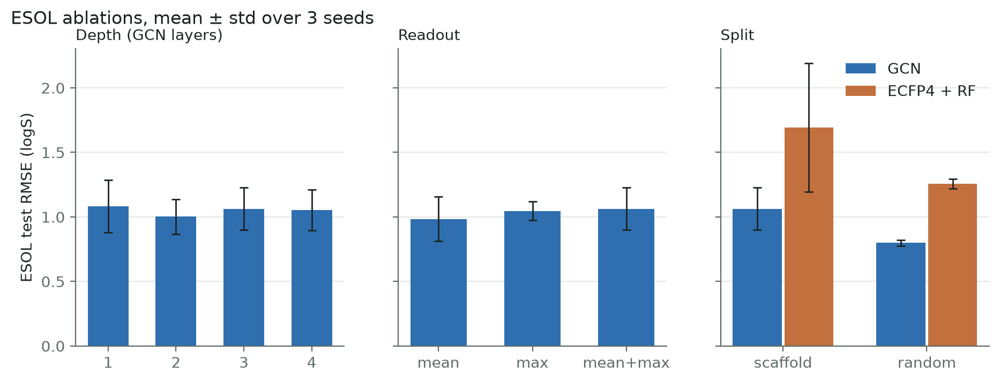
"Chemistry datasets contain families of near-identical molecules — same ring system, different side chain. A random split puts relatives on both sides, so the model gets tested on molecules it has essentially seen. The scaffold split keeps each family together. This is closer to the real use case: predicting properties of genuinely new chemistry."
Ablation proof (your money quote): | Split | GCN RMSE | RF RMSE | |-------|----------|---------| | Scaffold | 1.063 ± 0.163 | 1.694 ± 0.498 | | Random | 0.800 ± 0.023 | 1.256 ± 0.037 |
Both models look much better on random split. That improvement is leakage, not real performance. The scaffold split is honest.
2.4 Both Models See the Same Split (Invariant 8)
split.get_split()is called by both the GCN trainer and the RF baseline.- The split file is the single source of truth.
evaluate.pyasserts that the split hashes match between GCN and RF runs. If they don't, it raises aRuntimeError.
PART 3: THE TRAINING LOOP
3.1 Training Configuration (YAML → Dataclass)
# configs/esol_gcn.yaml
dataset: esol
name: gcn
split: scaffold
hidden: 128
layers: 3
dropout: 0.2
readout: meanmax
lr: 0.001 # learning rate
weight_decay: 0.00001 # L2 regularisation
batch_size: 64
max_epochs: 300
patience: 30 # early stopping patience
Both ESOL and Tox21 use identical hyperparameters. They were fixed in advance and not tuned for either model — this keeps the comparison fair.
3.2 The Training Loop Step by Step
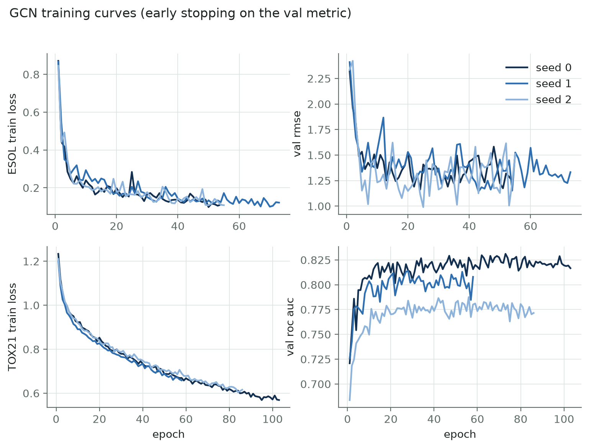
for each epoch (up to 300):
1. Shuffle training molecules into batches of 64
2. For each batch:
a. Forward pass: model(batch) → predictions
b. Compute loss (MSE for ESOL, masked BCE for Tox21)
c. Backward pass: compute gradients
d. Optimizer step: update weights
3. Score on validation set
4. If val metric improved → save checkpoint (best.pt)
5. If no improvement for 30 epochs → STOP (early stopping)
3.3 ESOL Loss — MSE on Normalised Targets
def target_stats(y, train_idx):
t = y[train_idx]
return {"mean": float(t.mean()), "std": float(t.std())}
loss = MSE(prediction, (y - train_mean) / train_std)
Critical: Normalisation stats come from the train split only (invariant 6). At
inference, predictions are de-normalised: pred * std + mean.
3.4 Tox21 Loss — Masked Binary Cross-Entropy
def masked_bce(logits, y, pos_weight=None):
m = ~torch.isnan(y) # mask: True where labelled
return BCE_with_logits(logits[m], y[m], pos_weight=pw[m])
Two complications handled:
1. Missing labels (17%): NaN values are masked out, never filled with 0.
Filling with 0 would teach the model that untested molecules are non-toxic — that's false.
2. Class imbalance (7.5% positive): pos_weight = negatives/positives per assay,
computed on the training set only. This upweights the rare toxic examples so the model
can't score well by always predicting "not toxic".
3.5 Optimizer & Early Stopping
- Adam optimizer: lr=1e-3, weight_decay=1e-5 (L2 regularisation).
- Early stopping: patience=30 epochs. If the validation metric (RMSE for ESOL, mean ROC-AUC for Tox21) hasn't improved for 30 epochs, training stops and the best checkpoint is kept.
- Best epochs in practice: ESOL seeds 0,1,2 → epochs 24, 43, 25. Tox21 seeds 0,1,2 → epochs 73, 28, 56.
3.6 Seeding — Exact Reproducibility
def set_seed(seed):
random.seed(seed)
np.random.seed(seed)
torch.manual_seed(seed)
torch.cuda.manual_seed_all(seed)
torch.use_deterministic_algorithms(True, warn_only=True)
The seed controls: - The scaffold split (which groups go where) - Model weight initialisation - Batch shuffling order - All random operations in NumPy/PyTorch
Result: make all from a fresh clone reproduced every committed result byte for byte
on an Apple M2 CPU in 11 minutes.
PART 4: EVALUATION & METRICS
4.1 Evaluation Flow (evaluate.py)
For each dataset (esol / tox21):
For each model (gcn / rf):
For each seed (0, 1, 2):
1. Load checkpoint (GCN) or train RF
2. Predict on test split (ONCE only)
3. Compute metrics
Assert GCN and RF used the same split (hash check)
Compute mean ± std across seeds
Write results/{dataset}.json
4.2 Understanding the Metrics
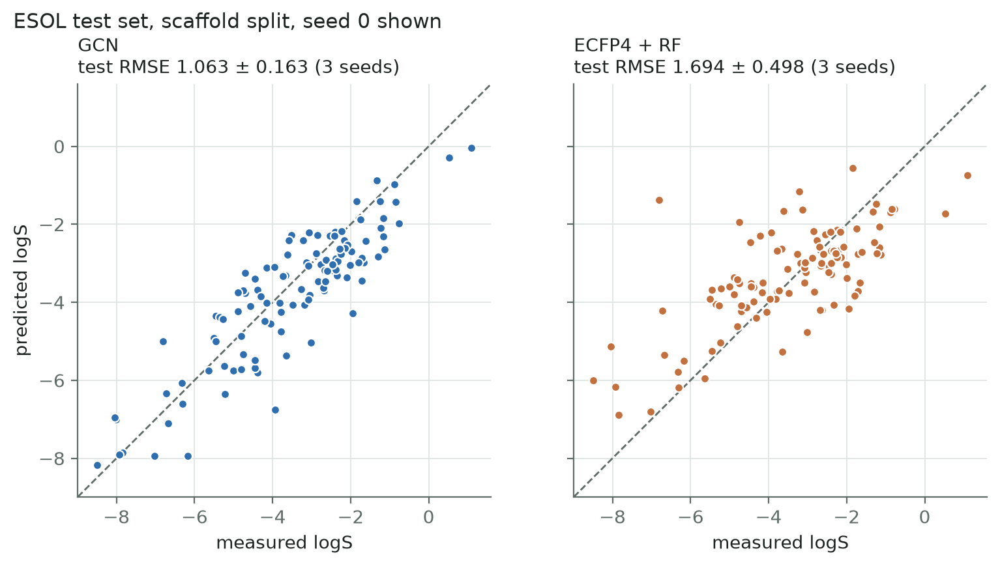
RMSE (Root Mean Squared Error) — ESOL
rmse = sqrt(mean((y_true - y_pred)²))
- In logS units. RMSE of 1 means the prediction is typically off by 1 log unit (a factor of 10 in solubility). Lower is better.
MAE (Mean Absolute Error) — ESOL
mae = mean(|y_true - y_pred|)
- Less sensitive to outliers than RMSE. Lower is better.
R² (Coefficient of Determination) — ESOL
r2 = 1 - SS_res / SS_tot
- 1 = perfect predictions, 0 = no better than guessing the mean. Higher is better.
ROC-AUC (Area Under ROC Curve) — Tox21
- "If you pick one toxic and one non-toxic molecule at random, how often does the model rank the toxic one as more likely toxic?"
- 0.5 = coin flip, 1.0 = perfect ranking. Higher is better.
- Computed per assay on labelled rows only, then averaged across assays.
- Tasks where all test labels are one class get NaN and are excluded from the mean.
4.3 The Seed 1 ESOL Story — Know This Cold
What happened: In seed 1, the polychlorinated biphenyl (PCB) scaffold group all landed in the test set. These are the least soluble molecules in ESOL (logS down to −11.6).
Why the RF failed badly: - A random forest predicts by averaging training targets. It can't predict below its training range — it's bounded by the most extreme training example. - ECFP bits record that chlorine is present, not how many there are. So all PCBs look similar in ECFP space. - RF predicted −4.6 for the least soluble molecule; GCN predicted −7.2 (true: even lower).
Per-seed results: | Seed | GCN RMSE | RF RMSE | |------|----------|---------| | 0 | 0.904 | 1.288 | | 1 | 1.230 | 2.249 ← the PCB seed | | 2 | 1.055 | 1.545 |
Talking point: "The GCN still wins on all three seeds, but the headline mean exaggerates the gap because of seed 1. On a typical split (seeds 0 and 2), the margin is smaller."
4.4 The Tox21 ROC-AUC Caveat
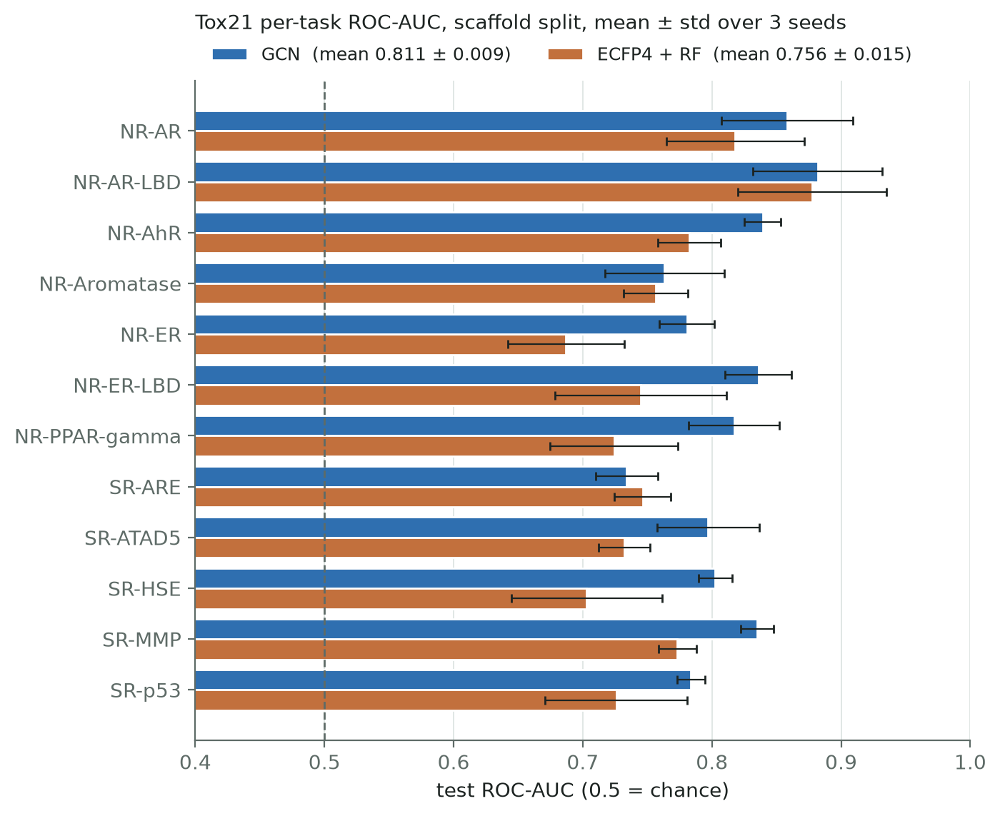
Our Tox21 ROC-AUC of 0.811 is slightly above our expected band of 0.68–0.80.
Explanation: DeepChem's deterministic scaffold split sends the rarest scaffolds to test, which is harder. Our split sends large groups to train first and samples test from smaller groups at random — this is likely easier. So our numbers should not be compared directly with published papers.
PART 5: REPRODUCIBILITY GUARANTEES
5.1 The Integrity Tests You Should Mention
| Test | What It Proves |
|---|---|
test_scaffold_split_properties |
No scaffold crosses splits; ratios ≈ 80/10/10 |
test_train_never_sees_test |
Scramble test data, retrain → weights are bit-identical (test set unused during training) |
test_normalization_* |
Changing val/test targets doesn't change normalisation stats |
test_gcn_and_rf_use_same_split |
Both models read the same split file |
test_split_file_is_single_source_of_truth |
Both models follow even a deliberately altered split file |
test_permutation_invariance |
Reorder atoms → output changes by < 1e-5 |
test_masked_bce_ignores_nan |
NaN labels contribute zero to the loss |
test_masked_roc_auc_ignores_nan |
NaN labels excluded from ROC-AUC |
Total: 34 tests, all passing.
5.2 Checkpoint Contents
Each best.pt stores:
{
"state_dict": model weights,
"config": full Config dataclass as dict,
"seed": seed number,
"out_dim": number of output dimensions,
"norm": {"mean": ..., "std": ...} for ESOL, None for Tox21,
"featurizer_version": "1",
"split_hash": 16-char hex hash of split indices,
"epoch": best epoch number,
"val": validation metrics at best epoch,
}
If the featurizer version in the checkpoint doesn't match the current code, loading raises an error. This prevents using a model trained with different features.
POSSIBLE QUESTIONS FOR SIMON PETER
Q1: "Why not tune hyperparameters?"
→ "We fixed all hyperparameters in advance to keep the comparison fair. Tuning one model and not the other would be misleading. We also only have ~1,100 ESOL molecules — a validation set of ~110 molecules is too small for reliable hyperparameter selection. A tuned RF (or one with count-based fingerprints instead of bits) would probably close some of the ESOL gap."
Q2: "Why 3 seeds? Isn't that too few?"
→ "Three seeds give a rough error bar showing run-to-run spread, not a formal significance test. With ESOL's 114 test molecules, one scaffold group can move the RMSE by more than the difference between models (as seed 1 shows). For a proper significance test we'd need more seeds and a paired test, but 3 seeds with full reporting of per-seed numbers is standard for MoleculeNet papers."
Q3: "How do you handle the class imbalance in Tox21?"
→ "Only 7.5% of labelled Tox21 entries are positive ('toxic'). Without correction, the model
could score well by always predicting 'not toxic'. We compute pos_weight = (number of
negatives / number of positives) per assay on the training set only, and pass it to BCE loss.
This upweights the rare positives. Side effect: predicted probabilities run high, so we tell
users to compare molecules rather than read probabilities as absolute risk."
Q4: "What if someone edits the split file?"
→ "Every split file stores a SHA-256 hash of its index lists. get_split() recomputes the
hash on every load and raises a ValueError if it doesn't match. Additionally, evaluate.py
asserts that the GCN and RF split hashes match."
Q5: "Why Adam and not SGD?"
→ "Adam adapts the learning rate per parameter, which helps on sparse molecular features where some atoms/features appear rarely. We also use weight decay (1e-5) for L2 regularisation. We didn't compare optimizers — this is a standard choice."
Q6: "What does early stopping actually save you from?"
→ "Without early stopping, the model would train for all 300 epochs and overfit the training set. Early stopping monitors the validation metric and keeps the checkpoint from the epoch where validation performance was best. With patience=30, it waits 30 epochs after the last improvement before stopping, to avoid stopping too early on a noisy metric."
QUICK REFERENCE CARD
| Item | Value |
|---|---|
| Train/Val/Test ratio | 80/10/10 scaffold split |
| Split file location | data/splits/{dataset}_seed{n}.json |
| Optimizer | Adam, lr=1e-3, weight_decay=1e-5 |
| Batch size | 64 |
| Max epochs | 300 |
| Early stopping patience | 30 epochs |
| ESOL loss | MSE on z-scored targets (train stats only) |
| Tox21 loss | Masked BCE with per-assay pos_weight |
| Seeds | 0, 1, 2 |
| ESOL test size | ~114 molecules (seed 0) |
| Tox21 test size | ~783 molecules (seed 0) |
| Total pytest tests | 34, all passing |
| Reproducibility | Byte-identical results from fresh clone |
| Key code files | data.py, split.py, train.py, evaluate.py, metrics.py |
Viva Script — Rakesh (S20230010196)
Your Focus Areas
- Baseline Comparison: ECFP4 + Random Forest
- Ablation Experiments & Analysis
- Demo App, Limitations & Future Work
Read 00_OVERVIEW.md first for the project-level context everyone shares.
PART 1: THE BASELINE — ECFP4 + RANDOM FOREST
1.1 What Is ECFP (Extended-Connectivity Fingerprint)?
Opening line for the viva:
"ECFP is the standard way to turn a molecule into a fixed-length vector. It's a Morgan fingerprint with radius 2, producing 2048 bits. For each atom, a fixed hash function looks at the atom and its neighbours within 2 bonds, and sets one bit in a 2048-length vector. The same molecule always gets the same bits, regardless of the task."
How ECFP4 works step by step: 1. For each atom, collect its properties (element, bond count, charge, etc.) 2. Look at all atoms within 2 bonds (that's the radius-2 part, hence "ECFP4" = diameter 4) 3. Hash the neighbourhood information into one of 2048 bit positions 4. Set that bit to 1 5. The final fingerprint: a 2048-bit binary vector (mostly zeros)
In our code (baseline.py):
_MORGAN = rdFingerprintGenerator.GetMorganGenerator(radius=2, fpSize=2048)
def ecfp(smiles):
return np.stack([_MORGAN.GetFingerprintAsNumPy(parse_smiles(s)[0]) for s in smiles])
1.2 ECFP vs Learned Fingerprint — The Key Comparison
| Aspect | ECFP4 (Fixed) | GCN (Learned) |
|---|---|---|
| How it aggregates | Fixed hash of atom neighbourhoods | Learned weighted average of atom features |
| Neighbourhood radius | 2 bonds | 3 bonds (3 GCN layers) |
| Dimension | 2048 bits | 256 floats |
| Task-specific? | No — same bits for any task | Yes — fingerprint shaped by training |
| Bond types | Included in the hash | Ignored by GCNConv |
| Atom counts | Presence only (bit is 1 or 0) | Captured via mean pooling + mass feature |
| Differentiable? | No — can't backprop through a hash | Yes — gradients flow end-to-end |
| Gradient explanations? | No | Yes (saliency maps) |
Critical distinction (say this in the viva):
"The word 'differentiable' is the key. ECFP uses a fixed hash — you can't take its gradient, so you can't train it end-to-end. The GCN replaces the hash with smooth operations (averages, matrix products, ReLU), so the loss gradient flows all the way back through the fingerprint into the weights. The fingerprint learns to emphasise whatever matters for the task."
1.3 What Is a Random Forest?
A random forest is an ensemble of 500 decision trees, each trained on a random subset of the data and features. The final prediction is the average of all trees (regression) or majority vote (classification).
For ESOL:
rf = RandomForestRegressor(n_estimators=500, random_state=seed, n_jobs=-1)
rf.fit(X[train], y[train, 0])
pred = rf.predict(X[test])
For Tox21:
# ONE separate forest per assay, trained only on rows labelled for that assay
for t in range(12):
labelled_train = train[~np.isnan(y[train, t])]
rf = RandomForestClassifier(n_estimators=500, random_state=seed)
rf.fit(X[labelled_train], y[labelled_train, t])
pred[:, t] = rf.predict_proba(X[test])[:, 1]
Why one forest per assay? Because each assay has different molecules labelled. Training one forest on all 12 tasks would need molecules labelled for all 12 — very few have that.
1.4 Why the RF Lost — Structural Reasons
-
Can't extrapolate: A random forest predicts by averaging training targets. It cannot predict below its training range. In seed 1, PCBs (logS down to −11.6) were all in test — the RF could only predict ≈ −4.6 (its training minimum).
-
ECFP doesn't count atoms: A bit is either 0 or 1. Three chlorines in a neighbourhood set the same bit as one chlorine. The GCN sees atom counts through mean pooling and the mass feature.
-
No task-specific features: ECFP gives the same bits whether predicting solubility or toxicity. The GCN tailors its representation to the loss.
-
No gradient-based explanations: ECFP + RF is a black box — you can compute feature importance but can't make atom-level saliency maps.
PART 2: ABLATION EXPERIMENTS
2.1 What Is an Ablation?
"An ablation study changes one component at a time to see if it matters. We ran three ablations on ESOL: depth (number of GCN layers), readout (pooling method), and split type (scaffold vs random)."
2.2 Depth Ablation — Number of GCN Layers
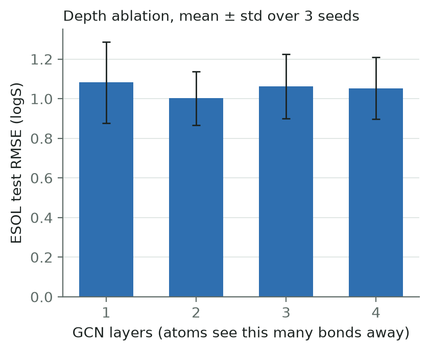
| Layers | RMSE |
|---|---|
| 1 | 1.082 ± 0.204 |
| 2 | 1.002 ± 0.135 |
| 3 (default) | 1.063 ± 0.163 |
| 4 | 1.053 ± 0.156 |
Conclusion: Every difference is within one standard deviation. We cannot claim 3 layers is best, or that depth matters at all at this dataset size.
Why no over-smoothing at 4 layers? Probably because of residual connections (skip connections from layer 2 onwards), which let later layers add refinements rather than replace the representation. ESOL is also too small to separate these settings.
How to explain over-smoothing:
"With many layers, every atom ends up averaging over nearly the whole molecule. All atom vectors converge to the same value. Then max pooling can't pick out any distinctive features — everything looks the same."
2.3 Readout Ablation — Pooling Method
| Readout | RMSE |
|---|---|
| Mean only | 0.985 ± 0.172 |
| Max only | 1.046 ± 0.072 |
| Mean+Max (default) | 1.063 ± 0.163 |
Conclusion: Again, no clear winner. All within noise. We kept mean+max because it was the planned default, not because the ablation favoured it. (Say this — it shows honesty.)
Why both mean and max? - Mean captures: "what is this molecule made of on average?" - Max captures: "is there at least one atom of this kind?" (e.g., one nitro group can dominate toxicity but would be diluted by mean)
2.4 Split Ablation — Scaffold vs Random
| Split | GCN RMSE | RF RMSE |
|---|---|---|
| Scaffold | 1.063 ± 0.163 | 1.694 ± 0.498 |
| Random | 0.800 ± 0.023 | 1.256 ± 0.037 |
This is the one clear effect. Both models improve dramatically on random split. This improvement is leakage — the random split puts close analogues of test molecules in the training set.
Key observations: 1. Both models improve, not just one — the leakage is universal. 2. The standard deviations shrink on random split (0.023 vs 0.163) — the split is more stable because there are no large scaffold groups to move around. 3. This is why every headline number uses the scaffold split.
2.5 How to Present Ablations in the Viva
"We ran three ablations on ESOL. Depth and readout made no measurable difference — all variants were within noise. The split type was the one clear effect: switching from scaffold to random dropped the GCN's RMSE from 1.06 to 0.80, but that improvement is leakage from shared scaffolds between train and test, not real generalisation. We report this honestly to justify why all headline numbers use the scaffold split."
PART 3: THE DEMO APP
3.1 What the Demo Does

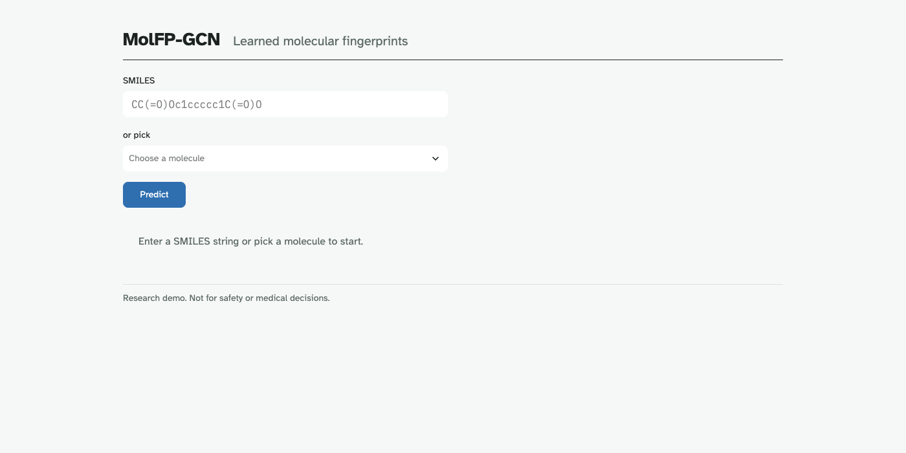
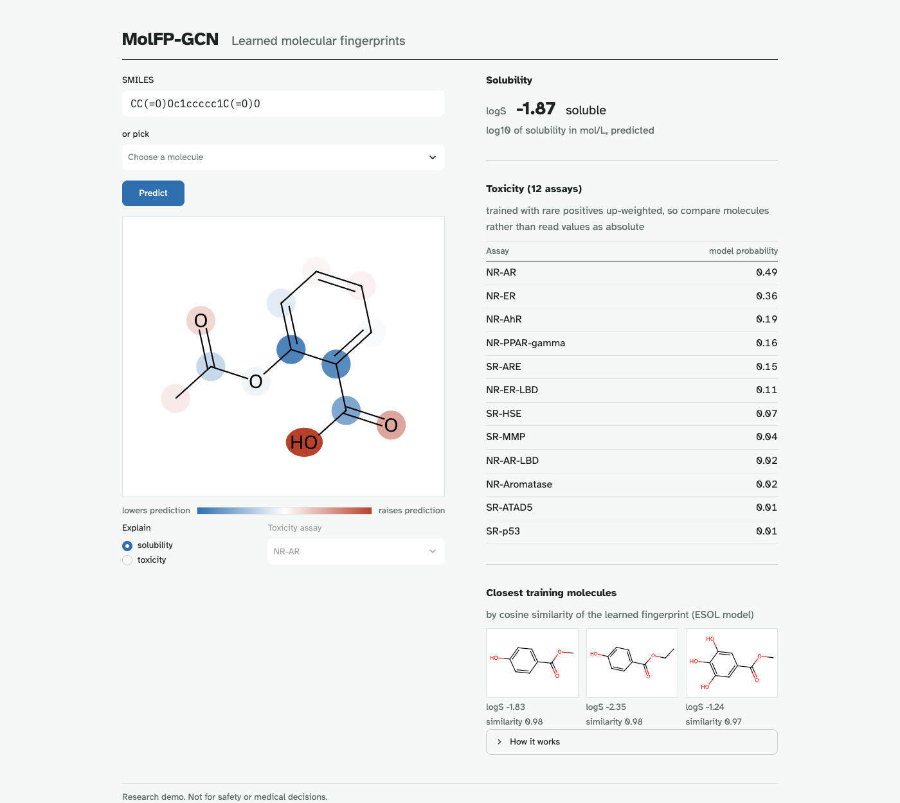
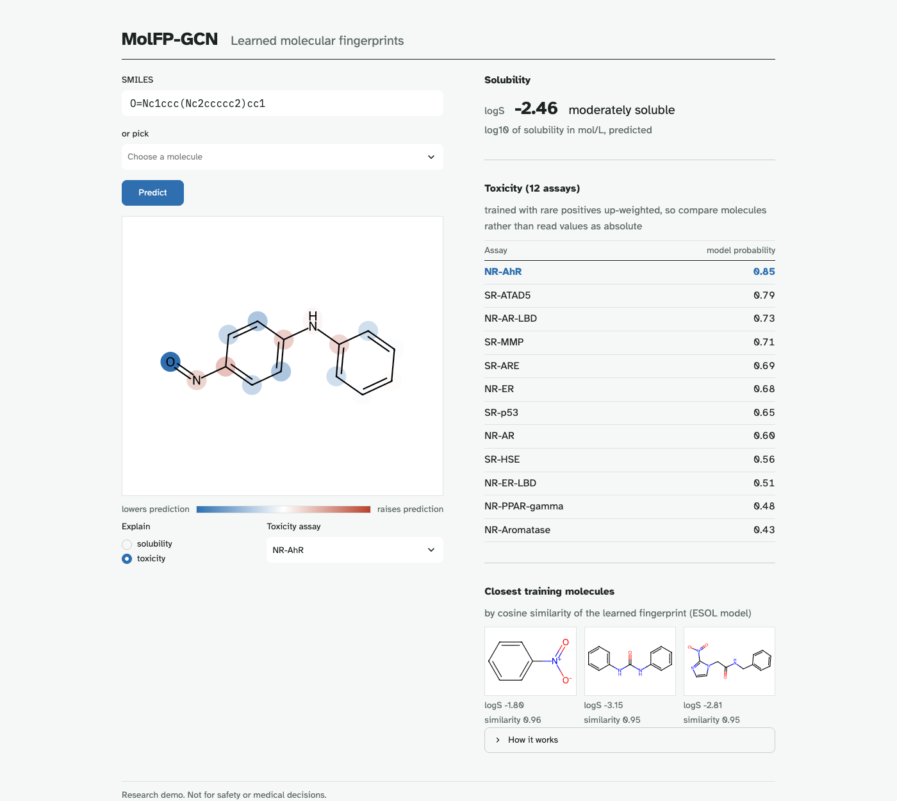
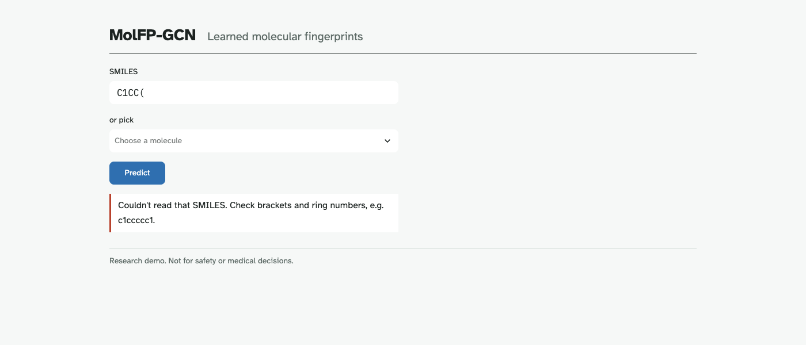
A Streamlit web app at http://localhost:8501. The user can:
- Enter a SMILES string or pick from 8 pre-loaded molecules (aspirin, caffeine, paracetamol, ibuprofen, benzene, ethanol, nicotine, and a known toxic molecule the model never saw in training).
- Press Predict.
- See: - The molecule drawn with atoms coloured by saliency (red = pushes prediction up, blue = pushes down) - Predicted solubility in logS with a plain-language band (soluble / moderately soluble / poorly soluble) - 12 toxicity probabilities (with a note: "model probability", never "risk") - 3 closest training molecules by cosine similarity of their 256-d learned fingerprints
- Switch the colouring between solubility and any of the 12 toxicity assays.
URL parameter: http://localhost:8501/?smiles=CCO works directly.
3.2 Design Philosophy (From DESIGN.md
| Element | Choice | Reason |
|---|---|---|
| Palette | Paper white (#F6F8F7), ink black (#1C2321), one accent blue (#2F6FB0) | Lab-paper aesthetic, readable on projector |
| Font | Atkinson Hyperlegible (Google Fonts) | Designed for projector legibility |
| SMILES font | IBM Plex Mono | Code must show exact characters |
| Layout | Two columns desktop, stacked mobile | Left-aligned, clean |
| Molecule drawing | RDKit SVG, min 420px | Memorable element, must be readable from back of room |
| Saliency scale | Blue ↔ white ↔ red (diverging) | Data visualisation, not decoration |
| Motion | Saliency fade-in 250ms only | Respects prefers-reduced-motion |
Forbidden: Rounded cards with shadows, gradient headers, all-caps, emoji, rainbow colormaps, Streamlit default red accent.
3.3 Input Validation & Error Handling
The demo refuses bad input before anything can crash:
| Check | Limit | Error Message |
|---|---|---|
| Empty input | — | "Enter a SMILES string or pick a molecule to start." |
| SMILES too long | 200 chars | "Molecule too large for the demo (limit 100 heavy atoms)." |
| Too many atoms | 100 heavy atoms | Same message |
| Invalid SMILES | — | "Couldn't read that SMILES. Check brackets and ring numbers, e.g. c1ccccc1." |
| Missing checkpoint | — | Shows a one-liner pointing to make train |
3.4 Demo Caveats to Say Out Loud
- Predictions for famous drugs can be off even if they're in the training set (caffeine is one). Early stopping picks the best validation epoch, not the one that memorises training molecules.
- "Closest training molecules" uses cosine similarity of the 256-d fingerprint, not structural similarity. It shows what the model considers alike.
- Toxicity probabilities run high because of pos_weight. Compare molecules with each other, don't read 0.8 as "80% risk".
PART 4: LIMITATIONS
4.1 Known Limitations (Be Ready to Discuss Each)
1. GCNConv Ignores Bond Types
- A C=O (double bond) and a C–O (single bond) send identical messages.
- Bond type, conjugation, and ring membership are already stored in
edge_attr. - Fix: Replace GCNConv with an edge-aware layer:
- GINE: message = MLP([h_neighbour, e_bond])
- GATv2 with edge_dim: attention weights informed by bond features
- D-MPNN: message-passing on bonds instead of atoms
- This would be a change to
model.pyonly — the featuriser already stores everything needed.
2. ESOL Is Small
- Only ~1,100 molecules, ~114 in the test set.
- One scaffold group (the PCBs) can move the RMSE by more than the difference between models.
- Seed-to-seed spread is large.
3. No Hyperparameter Tuning
- Hyperparameters were fixed in advance for both models.
- A tuned RF (or one with count-based fingerprints instead of bits) would probably close some of the ESOL gap.
4. Tox21 Probabilities Are Not Calibrated
- The pos_weight inflates predicted probabilities.
- The demo shows them for ranking molecules, not as absolute risk.
5. Three Seeds ≠ Significance Test
- Three runs give a rough error bar, not a formal statistical test.
- For proper significance: more seeds + a paired test (e.g., paired t-test or Wilcoxon).
PART 5: FUTURE WORK
5.1 Concrete Next Steps (Ranked by Impact)
1. Edge-Aware Message Passing (Highest Priority)
"Replace GCNConv with GINE or GATv2 with
edge_dim, so the model can distinguish single from double bonds. Our featuriser already stores bond type, conjugation, and ring membership. We'd only changemodel.py. This should help especially on conjugated systems where bond order matters for solubility and reactivity."
2. Deterministic DeepChem Scaffold Split
"Compare against DeepChem's deterministic split, where the rarest scaffolds go to test. This would let us place our Tox21 numbers alongside published results."
3. Saliency Validation by Deletion
"Mask the top-k salient atoms and measure how much the prediction moves vs masking random atoms. If saliency is meaningful, the prediction should move more when salient atoms are masked."
4. Additional Ideas
- Larger datasets: BBBP (blood-brain barrier), BACE, HIV from MoleculeNet.
- Attention visualisation: GATv2 would give interpretable attention weights per edge.
- Calibration: Platt scaling or temperature scaling for Tox21 probabilities.
- Uncertainty quantification: Monte Carlo dropout or ensembles.
PART 6: COMPARISON TABLE — GCN vs ECFP+RF (Your Summary Slide)
| Aspect | GCN (Learned FP) | ECFP4 + Random Forest |
|---|---|---|
| Fingerprint | 256-d, task-specific, learned | 2048-bit, fixed, task-agnostic |
| Bond awareness | No (GCNConv limitation) | Yes (included in hash) |
| Atom counting | Yes (mean pool + mass) | No (bit = present or not) |
| Can extrapolate | Somewhat (linear head) | No (bounded by training range) |
| Explainability | Atom-level saliency maps | Feature importance only |
| Training time | ~1 min/seed (ESOL, CPU) | Seconds |
| Complexity | ~87K parameters | 500 trees, no gradients |
| ESOL RMSE | 1.063 ± 0.163 | 1.694 ± 0.498 |
| Tox21 ROC-AUC | 0.811 ± 0.009 | 0.756 ± 0.015 |
| Wins on Tox21 assays | 11/12 | 1/12 (SR-ARE) |
POSSIBLE QUESTIONS FOR RAKESH
Q1: "Why use ECFP as the baseline instead of another GNN?"
→ "ECFP + random forest is the standard baseline in molecular property prediction papers. It's well-established, fast, and requires no deep learning. Comparing a GNN against it tests whether the added complexity of learning a fingerprint is justified. For a GNN-vs-GNN comparison (e.g., GCN vs GAT vs MPNN), we'd need more computational budget and it would be a different research question — 'which GNN architecture' rather than 'does learning a fingerprint help'."
Q2: "Can the RF ever beat the GCN?"
→ "Yes, in specific cases. On Tox21 SR-ARE, the RF actually beats the GCN (0.746 vs 0.734). A tuned RF with count-based fingerprints (instead of binary bits) might also close the ESOL gap. The GCN's advantage is structural — it learns task-specific features and can capture atom-count information — but the RF is simpler, faster, and has fewer failure modes."
Q3: "What would you change if you had more time?"
→ "Three things, in order: (1) Replace GCNConv with an edge-aware layer like GINE or GATv2 to use bond features we already store. (2) Compare against DeepChem's deterministic scaffold split so our Tox21 numbers are directly comparable with papers. (3) Validate the saliency maps with a deletion test — mask top-k salient atoms and check if the prediction moves more than masking random atoms."
Q4: "Why does the demo warn against reading toxicity probabilities as risk?"
→ "Because we use pos_weight to handle class imbalance. Only 7.5% of labelled entries are positive, so we upweight them during training. This makes the model take toxic examples more seriously, but it also inflates the predicted probabilities. A molecule with a predicted probability of 0.8 is not '80% likely to be toxic' — it just scores higher than one predicted at 0.3. For absolute risk you'd need calibration (Platt scaling or temperature scaling), which we didn't implement."
Q5: "How does the 'closest training molecules' feature work?"
→ "At startup, the app computes the 256-dimensional learned fingerprint for every training
molecule using model.embed(). When a new molecule is entered, we compute its fingerprint
and find the 3 training molecules with the highest cosine similarity. This shows what the
model considers structurally similar — which may differ from traditional chemical
similarity."
Q6: "Is this ready for real drug discovery?"
→ "No. It's a research demo. The model wasn't validated against experimental measurements beyond ESOL and Tox21. Tox21 probabilities are uncalibrated. The saliency maps are approximate. ESOL is tiny and results depend on the split. For real use you'd need more diverse training data, proper calibration, external validation, and regulatory review. The footer says 'Research demo. Not for safety or medical decisions.'"
QUICK REFERENCE CARD
| Item | Value |
|---|---|
| Baseline fingerprint | ECFP4 (Morgan radius 2, 2048 bits) |
| Baseline model | RandomForestRegressor/Classifier, 500 trees |
| Tox21 RF approach | 1 forest per assay, trained on labelled rows only |
| Ablation: depth | 1, 2, 3, 4 layers → all within noise |
| Ablation: readout | mean, max, mean+max → all within noise |
| Ablation: split | scaffold vs random → random is leaky (clear effect) |
| Demo app | Streamlit at localhost:8501 |
| Demo molecules | 8 presets + custom SMILES |
| Input limits | 200 chars, 100 heavy atoms |
| #1 limitation | GCNConv ignores bond types |
| #1 future work | Edge-aware layer (GINE/GATv2) |
| Key code files | baseline.py, evaluate.py (ablation path), app/streamlit_app.py |
⚡ Quick Revision Cheat Sheet (All Members)
Print this or keep it on your phone. Glance at it before walking into the viva.
🔤 The One-Liner
"GCN learns a task-specific molecular fingerprint from atom graphs; beats ECFP+RF on ESOL and Tox21 with scaffold splits."
📊 Results Table (Memorise)
| ESOL RMSE ↓ | ESOL R² ↑ | Tox21 AUC ↑ | |
|---|---|---|---|
| GCN | 1.063 ± 0.163 | 0.709 | 0.811 ± 0.009 |
| RF | 1.694 ± 0.498 | 0.267 | 0.756 ± 0.015 |
GCN wins 11/12 Tox21 assays. RF wins only SR-ARE.
🧬 Pipeline in 5 Seconds
SMILES → RDKit → 35-dim atom features → 3 GCNConv layers → mean+max pool → 256-d fingerprint → MLP → prediction
📐 The Equation
H' = D^{−½}(A+I)D^{−½} H W - A+I = self-loop (keep own identity) - D^{−½} = degree normalisation (fair averaging) - W = shared learned weights
🛡️ Anti-Leakage Guarantees (Impress the Panel)
- Scaffold split — no scaffold crosses sets
- Test set used once — scramble test → bit-identical weights
- Same split for both models — hash-checked
- Train-only normalisation stats
- All numbers auto-generated from results JSON
⚠️ Caveats to Mention FIRST (Shows Maturity)
- Seed 1 ESOL inflates the gap (PCBs in test)
- Tox21 AUC above expected band (easier split than DeepChem)
- Hyperparameters not tuned (fair but maybe not optimal)
- 3 seeds = rough error bar, not significance test
- GCNConv ignores bond types (C=O ≡ C–O)
🔮 Future Work (Top 3)
- Edge-aware layer (GINE/GATv2) to use bond features
- DeepChem deterministic split for comparable Tox21 numbers
- Saliency validation by atom deletion
🎯 Who Covers What
| Topic | Who |
|---|---|
| GCN architecture, equation, residuals, pooling | Kumaraswamy |
| Featurisation (35-dim atoms, graph rules) | Kumaraswamy |
| Saliency / explainability | Kumaraswamy |
| Data loading, scaffold splitting algorithm | Simon Peter |
| Training loop, loss functions, early stopping | Simon Peter |
| Evaluation, metrics, reproducibility tests | Simon Peter |
| ECFP4 + RF baseline comparison | Rakesh |
| Ablation experiments (depth, readout, split) | Rakesh |
| Demo app, limitations, future work | Rakesh |
| Shared overview, results, project motivation | Everyone |
🔢 Numbers to Have Ready
| Fact | Number |
|---|---|
| ESOL molecules | 1,128 |
| Tox21 molecules | 7,823 |
| Atom feature dimension | 35 |
| Hidden dimension | 128 |
| Fingerprint dimension | 256 |
| GCN layers | 3 |
| ECFP bits | 2,048 |
| RF trees | 500 |
| Tox21 assays | 12 |
| Tox21 missing labels | 17% |
| Tox21 positive rate | 7.5% |
| Train/val/test | 80/10/10 |
| Seeds | 0, 1, 2 |
| Patience | 30 epochs |
| Max epochs | 300 |
| Learning rate | 1e-3 |
| Dropout | 0.2 |
| Total tests | 34 |
make all time |
11 min (M2 CPU) |
Good luck! 🍀